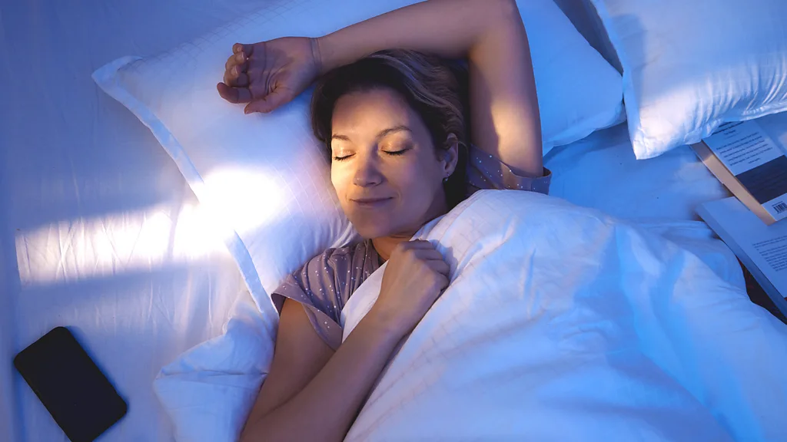

Feeling tired? You're not alone – and you may be thinking about how to tweak your sleep habits as a result. Often, the strategies we're told will help us feel more rested focus on night-time strategies, like having a regular bedtime and not scrolling on your phone in bed. (Read more about some science-backed ways to improve your sleep). But getting a good night's sleep isn't just about your nighttime routine. And feeling refreshed isn't always about getting a good night's sleep. There are other things you can do earlier in the day, while wide-awake, that can have an effect. Here are five ways to feel more rested, increase your energy levels and, yes, even improve your sleep that don't have to do with changing your sleep habits themselves.
Around one out of every three people worldwide lack sufficient iron levels. Particularly susceptible groups include infants and toddlers, girls and women of reproductive age (thanks to blood loss during menstruation), pregnant people, endurance athletes, vegetarians (especially vegans) and frequent blood donors. But anyone can wind up with an iron deficiency or its potential consequence, iron-deficiency anaemia – and symptoms can include tiredness and fatigue, but also restlessness and waking at night. If you frequently feel tired, despite making tweaks to your sleep habits, it may be worth consulting your physician about testing your levels of ferritin (a protein that helps store iron), or haemoglobin, which transports oxygen throughout the body. Even if you don't have an iron deficiency, being mindful of nutrition can help avoid one. Sources of the most readily absorbed iron, called heme iron, include meat, fish and eggs, while non-heme sources (like beans and green vegetables) can have their bioavailability boosted by consuming a vitamin C-rich food at the same time.
Tässä on linkki artikkeliin Artikkelin linkki Amanda Ruggeri
16.01.2025